Records
お客様の、変化の記録。
WAIST DESIGN 90 の施術例です。正面・側面・背面の3方向から、同じ条件で撮影しています。
MENS男性の症例
CASE 01WAIST DESIGN 90

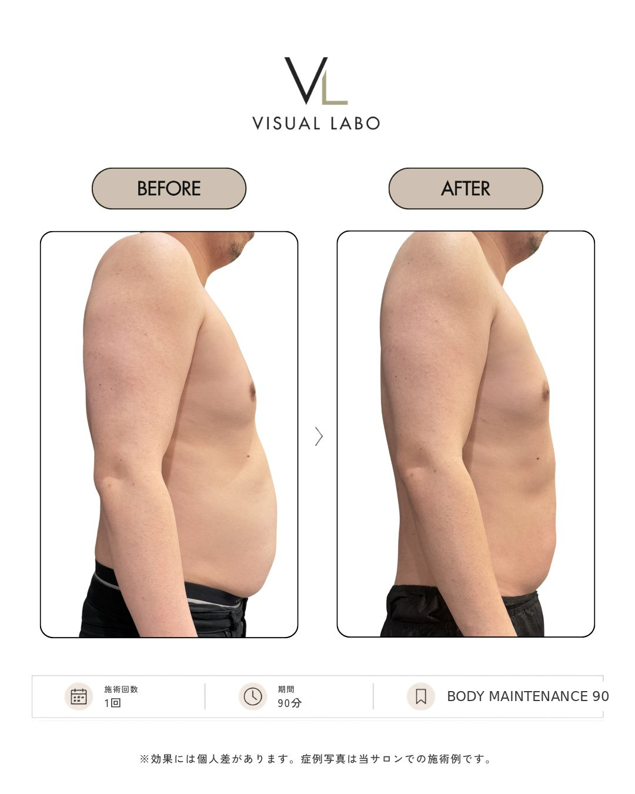
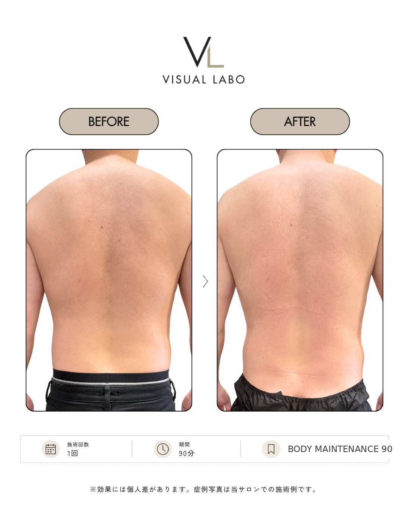
CASE 02WAIST DESIGN 90
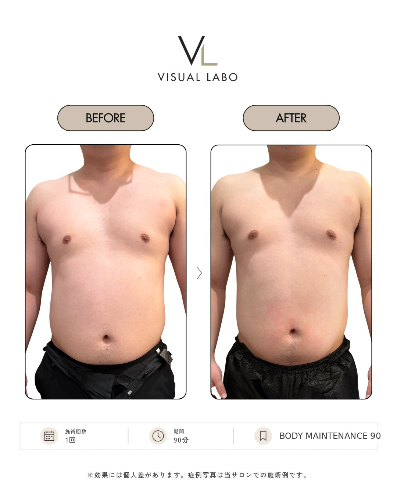
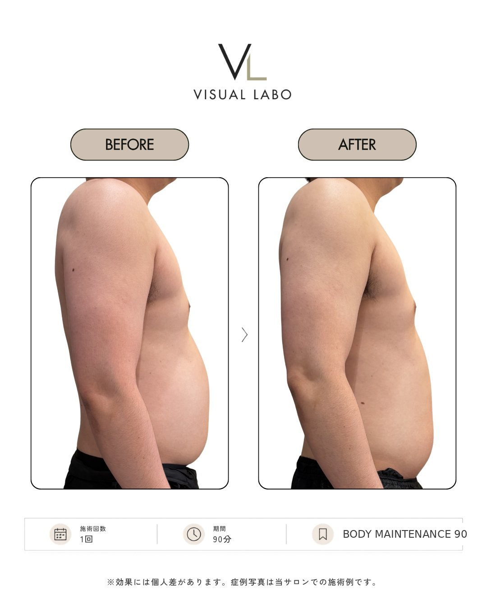
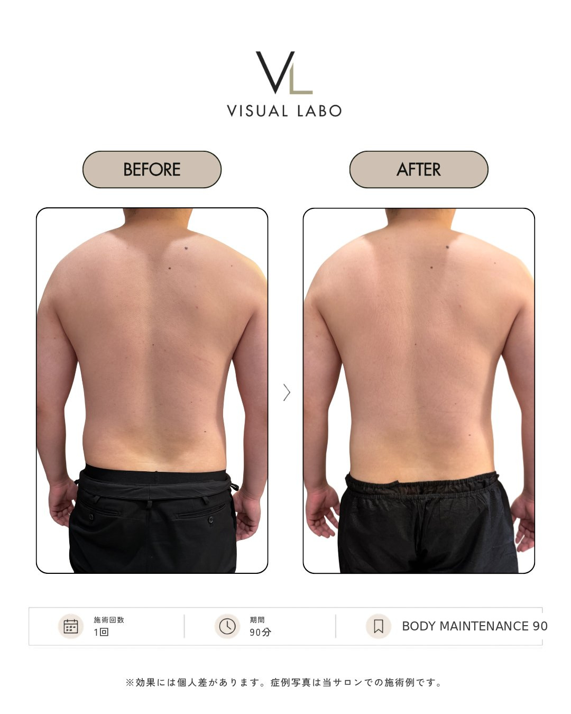
CASE 03WAIST DESIGN 90
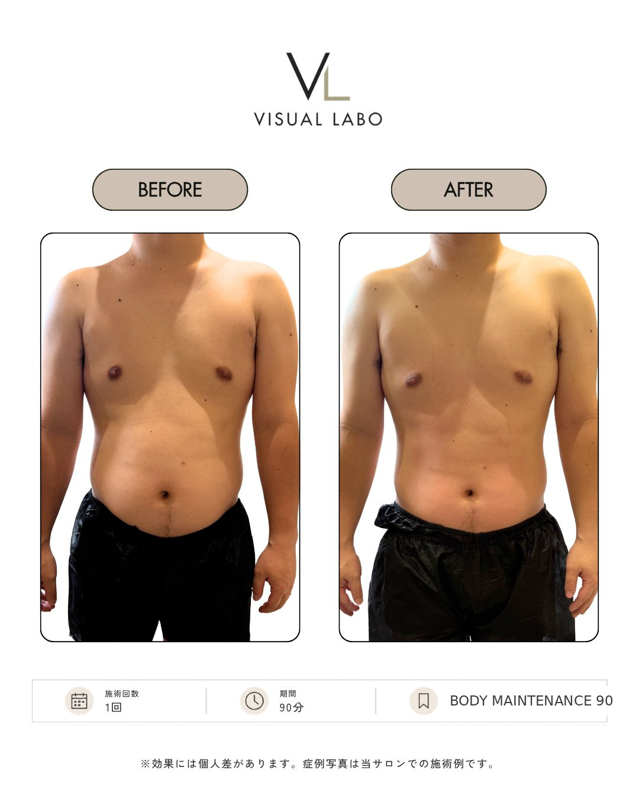

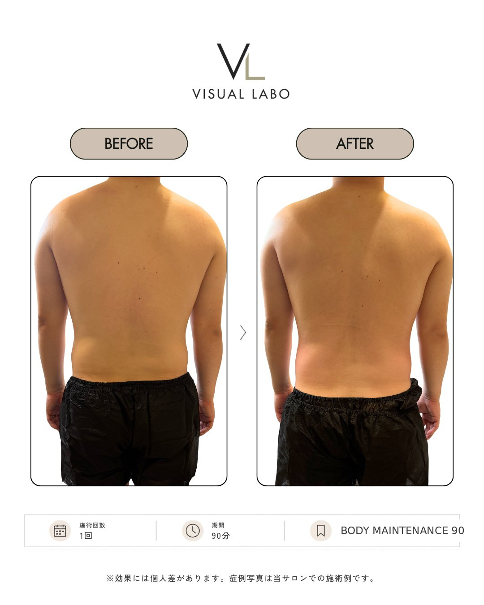
WOMEN女性の症例
CASE 01WAIST DESIGN 90 ／ 施術1回後
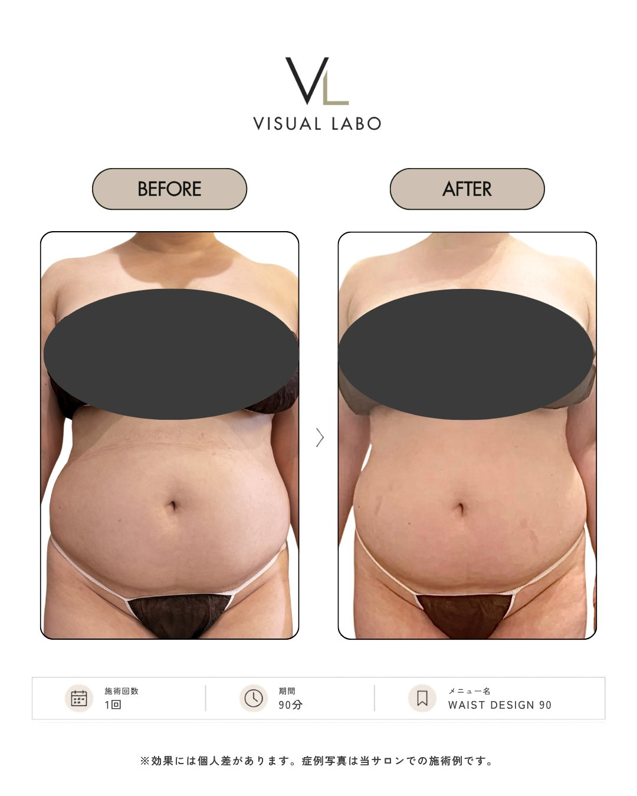
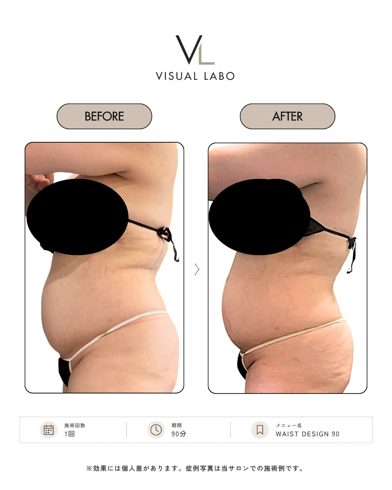
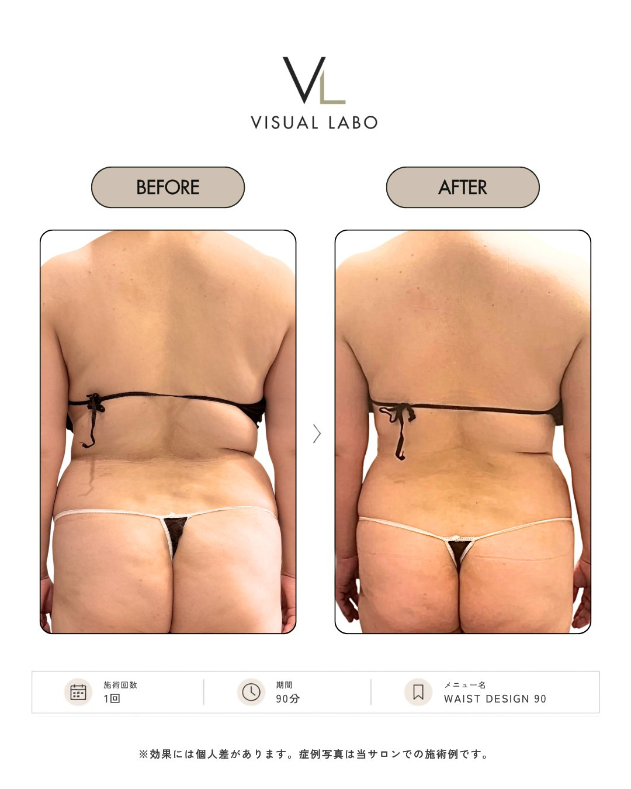
CASE 01WAIST DESIGN 90 ／ 施術2回後

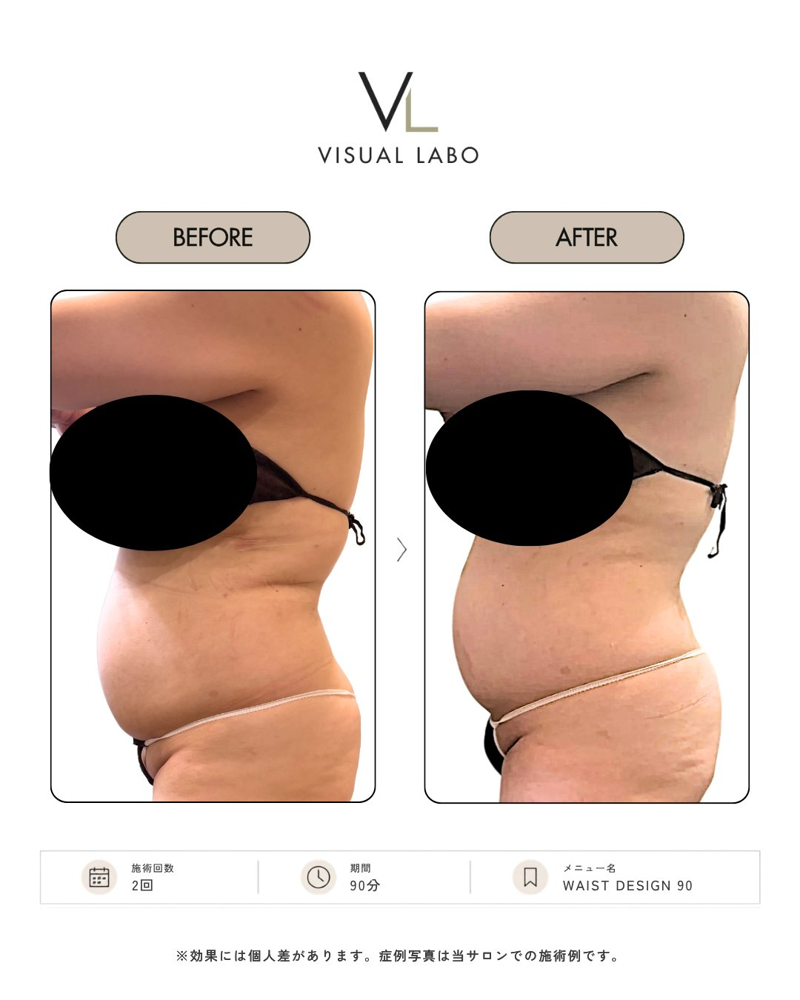

CASE 02二の腕 ／ WAIST DESIGN 90・施術1回後
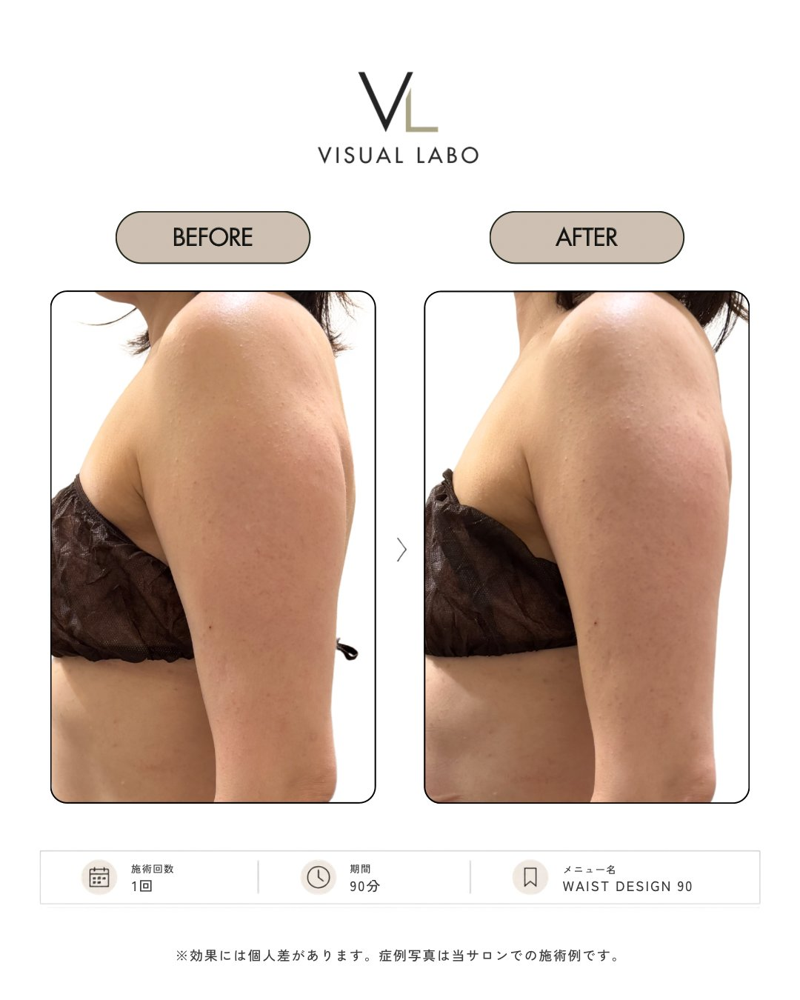
※ ご本人の同意を得て掲載しています。効果には個人差があります。
DISCLAIMER ／ 掲載にあたって
掲載する記録は、すべて実際にご来店いただいたお客様ご本人の同意を得たものです。写真は加工・修整なし、できる限り同じ角度・照明・服装で撮影します。掲載内容は個人の感想であり、効果を保証するものではありません。体型の変化には個人差があり、通った期間・回数・生活習慣によって結果は異なります。本サロンは体型管理・コンディショニングを目的としており、医療行為・疾病の治療を目的とするものではありません。